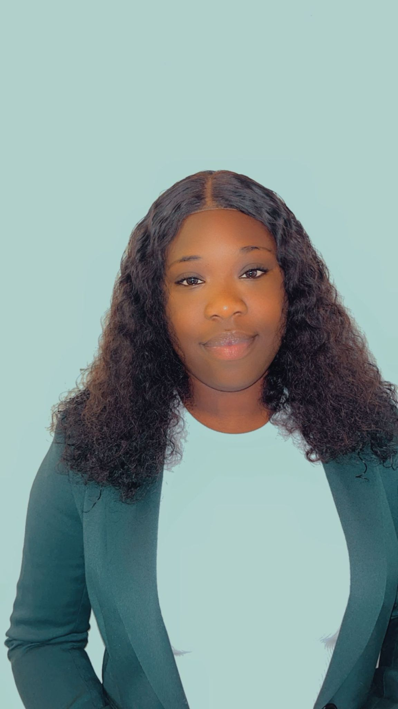

La pièce jointe Lettre de motivation alternante Maguette Diop.pdf a été ajoutée.Conversation ouverte. 1 message lu.

Aller au contenu
Utiliser Gmail avec un lecteur d'écran
1 sur 27 537
CV HTML CSS (CV HTML CSS)
Boîte de réception

amadou dieng <diengamah24@gmail.com>
Pièces jointes
10:56 (il y a 2 minutes)
À moi

Traduit : anglais 
français
Vérifiez les traductions, car Traduction peut faire des erreurs

 3 pièces jointes
  •  Analysé par Gmail
<!doctype html>
<html lang="fr">
<head>
  <meta charset="utf-8" />
  <meta name="viewport" content="width=device-width,initial-scale=1" />
  <title>CV — Maguette Diop</title>
  <link rel="stylesheet" href="styles.css">
</head>
<body>
  <main class="cv-container">
    <header class="header">
      <div class="photo">
        <!-- Nom du fichier image demandé : maguette.pdf -->
        
      </div>
      <div class="intro">
        <h1>Maguette Diop</h1>
        <p class="subtitle">Information - Documentation</p>

        <div class="contacts">
          <a href="mailto:maguetta09@gmail.com">maguetta09@gmail.com</a>
          <span class="sep">•</span>
          <a href="tel:0753045524">07 53 04 55 24</a>
          <div class="address">5 rue Saint-Gobain, Aubervilliers (93300) — Île-de-France, Paris</div>
        </div>

        <p class="objective">
          Actuellement en Master Gestion Stratégique de lʼInformation à lʼUniversité Paris 8, je suis à la recherche
          dʼune alternance à partir dʼoctobre 2025 dans la gestion documentaire, bibliothèques et innovation numérique.
        </p>
      </div>
    </header>

    <section class="columns">
      <section class="left">
        <h2>Diplômes & formations</h2>
        <ul class="list">
          <li><strong>Depuis septembre 2024</strong> — Master 1 Humanités Numériques / GSI — Université Paris 8, Paris</li>
          <li><strong>2023–2024</strong> — Licence en information & communication (Stratégie de l'information et du document numérique) — Université Jean Moulin Lyon 3</li>
          <li><strong>2021–2022</strong> — Licence Professionnelle en Science de l'Information documentaire — EBAD, Dakar (Sénégal)</li>
        </ul>

        <h2>Compétences & outils</h2>
        <ul class="tags">
          <li>Microsoft Office (Word, Excel, PowerPoint)</li>
          <li>Création de bases de données</li>
          <li>PAO / Graphisme</li>
          <li>PMB, Zotero, Pearltrees</li>
          <li>KOHA, SUDOC (mise à jour de notices)</li>
        </ul>

        <h2>Langues</h2>
        <ul class="list">
          <li>Français — courant</li>
          <li>Wolof — courant</li>
          <li>Anglais — notions</li>
        </ul>

        <h2>Centres d'intérêt</h2>
        <ul class="list">
          <li>Sport</li>
          <li>Lecture</li>
          <li>Cuisine</li>
        </ul>
      </section>

      <section class="right">
        <h2>Expériences professionnelles</h2>

        <article class="exp">
          <h3>Société Géologique de France — Stage (depuis mai 2025)</h3>
          <p>Inventaire et localisation de périodiques (France, Asie, Afrique). Mise à jour de notices KOHA et SUDOC (via COLODUS). Catalogage et gestion des collections en salle de lecture.</p>
        </article>

        <article class="exp">
          <h3>Documentaliste stagiaire — UCLy (Université Catholique de Lyon) — mai-juil. 2023</h3>
          <p>Alimentation et suivi de la base Ritimo : saisie, résumés d'ouvrages, bulletinage des périodiques, dépouillements. Élaboration de bibliographies et mise à jour des dossiers documentaires en ligne. Animation d'atelier Zotero.</p>
        </article>

        <article class="exp">
          <h3>Bibliothécaire stagiaire — UCLy — juin-août 2022</h3>
          <p>Accueil et orientation des usagers. Traitement matériel et intellectuel des documents (estampillage, enregistrement, cotation). Prêt de documents et diffusion sélective de l'information.</p>
        </article>

        <article class="exp">
          <h3>Documentaliste stagiaire — Médiathèque Alioune Diop, Institut français du Sénégal (Saint-Louis) — sept.-nov. 2021</h3>
          <p>Maitrise de la chaîne documentaire : collecte, traitement et diffusion de l'information. Recherche dans bases scientifiques, réalisation de produits documentaires, mise en place d'un système de veille.</p>
        </article>

        <article class="exp">
          <h3>Archiviste stagiaire — Service d'archives de l'Hôpital de Pikine, Dakar</h3>
          <p>Étude de la valeur d'un dossier d'archives ; tri, classement et diffusion.</p>
        </article>

        <h2>Références</h2>
        <p>Dalila MATTIA — <a href="mailto:dmattia@cfa-numia.fr">dmattia@cfa-numia.fr</a> — 06 75 93 14 31</p>

        <h2>Atouts</h2>
        <ul class="list">
          <li>Sociable, flexible, curieuse, esprit d'équipe</li>
        </ul>
      </section>
    </section>

    <footer class="footer">
      <small>CV généré à partir des informations fournies. Contact : <a href="mailto:maguetta09@gmail.com">maguetta09@gmail.com</a></small>
    </footer>
  </main>
</body>
</html>
index.html
Affichage de index.html en cours...
MOmymime@gmail.com
La pièce jointe Lettre de motivation alternante Maguette Diop.pdf a été ajoutée.Conversation ouverte. 1 message lu.

Aller au contenu
Utiliser Gmail avec un lecteur d'écran
1 sur 27 537
CV HTML CSS (CV HTML CSS)
Boîte de réception

amadou dieng <diengamah24@gmail.com>
Pièces jointes
10:56 (il y a 4 minutes)
À moi

Traduit : anglais 
français
Vérifiez les traductions, car Traduction peut faire des erreurs

 3 pièces jointes
  •  Analysé par Gmail
:root{
  --accent:#1f6f6f;
  --bg:#f7f9fa;
  --card:#ffffff;
  --text:#1b1b1b;
  --muted:#666666;
  --maxw:1000px;
}

*{box-sizing:border-box;font-family:Inter, "Segoe UI", Roboto, Arial, sans-serif;}

body{
  margin:0;
  background:linear-gradient(180deg, #eaf3f2 0%, var(--bg) 100%);
  color:var(--text);
  -webkit-font-smoothing:antialiased;
  -moz-osx-font-smoothing:grayscale;
  padding:32px 16px;
  display:flex;
  justify-content:center;
}

.cv-container{
  width:100%;
  max-width:var(--maxw);
  background:var(--card);
  border-radius:12px;
  box-shadow:0 8px 30px rgba(20,30,40,0.08);
  padding:28px;
}

/* Header */
.header{
  display:flex;
  gap:20px;
  align-items:center;
  border-bottom:1px solid #eee;
  padding-bottom:20px;
  margin-bottom:20px;
}

.photo{
  width:140px;
  height:140px;
  border-radius:12px;
  overflow:hidden;
  flex-shrink:0;
  box-shadow:0 6px 18px rgba(10,20,30,0.06);
}

.photo img{
  width:100%;
  height:100%;
  object-fit:cover;
  display:block;
}

.intro h1{
  margin:0;
  font-size:26px;
  letter-spacing:0.2px;
}

.subtitle{
  color:var(--muted);
  margin-top:6px;
  margin-bottom:12px;
}

/* Contacts & objective */
.contacts a{
  color:var(--accent);
  text-decoration:none;
  font-weight:600;
}

.contacts{font-size:14px;color:var(--muted);margin-bottom:8px;}
.contacts .address{margin-top:6px;font-size:13px;color:var(--muted);}
.sep{margin:0 8px;color:var(--muted);}

/* Columns layout */
.columns{
  display:grid;
  grid-template-columns: 320px 1fr;
  gap:28px;
}

/* Left column */
.left h2, .right h2{margin-top:0;color:var(--accent);font-size:16px;}
.left .list, .right .list{padding-left:18px;}
.left .tags{list-style:none;padding:0;margin:0;}
.left .tags li{background:#f1fbfa;margin:6px 0;padding:8px;border-radius:8px;font-size:14px;color:var(--muted);}

/* Experiences */
.exp{margin-bottom:14px;}
.exp h3{margin:0 0 6px 0;font-size:15px;}
.exp p{margin:0;color:var(--muted);line-height:1.5;font-size:14px;}

/* Footer */
.footer{border-top:1px solid #eee;margin-top:22px;padding-top:12px;text-align:center;color:var(--muted);font-size:13px;}

/* Responsive */
@media (max-width:880px){
  .columns{grid-template-columns:1fr; }
  .header{flex-direction:column;align-items:flex-start;}
  .photo{width:120px;height:120px;}
}
styles.css
Affichage de index.html en cours...
MOmymime@gmail.com
